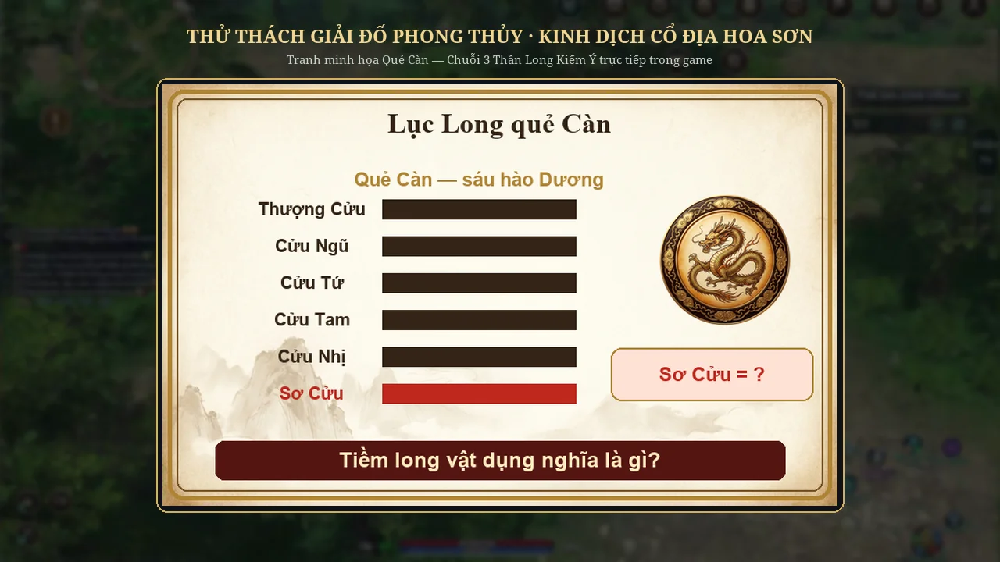

Mục lục chuyên đề Phó Bản & Hoạt Động (8 mục)
1. Bảng Tra Cứu Nhanh 5 Đại Phó Bản
×(1 + số SimBot) (tối đa ×4)!
| Phó Bản (Map) | Cấp Đề Xuất | Cách Vào & Khung Giờ | Phần Thưởng Điểm Nhấn |
|---|---|---|---|
Bán Nguyệt Bí Cảnh (105) | Lv.160+ | Thần Hành Phù → ② Phó Bản (hàng ngày) | Đồ Hoàng Kim, Thủy Tinh & Mật Thư Bạch Long (sau 3 lần hạ Động Chủ) |
Tử Vong Hoang Mạc (106 / VIP 154) | Lv.180+ | Thần Hành Phù → ② Phó Bản | Nguyên liệu Cường Hóa, Đá Tẩy Luyện, Điểm Khí Vận |
Thông Thiên Thí Luyện Tháp (205 / 208) | Lv.120 / Lv.160 | Thần Hành Phù → ② Phó Bản (leo tầng) | Tầng 25+ rơi trang bị Tiềm Năng 90 cực hiếm |
Thuyền Phong Lăng Độ (206) | Lv.140+ | Mỗi 2 tiếng giờ lẻ (01h, 03h ... 23h) | 30 đợt × 30 quái + 3 Boss Hoàng Kim (đợt 9, 18, 27) |
Cổ Địa Hoa Sơn (51) | Lv.200 / CS | Thần Hành Phù → ② Phó Bản (vào lại nhiều lần/ngày) | 3 Boss Kết Giới, Giải đố Kinh Dịch & rèn Kiếm Thần Long |
2. Bán Nguyệt Bí Cảnh (Map 105) & Mật Thư Thú Cưỡi Bay Bạch Long
Bán Nguyệt Bí Cảnh là phó bản đầu tiên giúp tân thủ farm bộ trang bị Hoàng Kim và mở khóa thú cưỡi bay 3D độc quyền:
- Giảm 50% Máu Boss ở Hạ Giới: Nếu bạn chuyển sang Thế Giới Hạ Giới qua Quả Cầu góc trái trước khi vào, máu Boss Bán Nguyệt giảm thêm 50% so với chuẩn!
- Chuỗi Mật Thư Môn Phái (Thưởng Bạch Long
5570): Sau 3 lần hạ Động Chủ Bán Nguyệt, bạn nhận được Mật Thư Môn Phái riêng theo hệ phái gồm 9 bước khám phá & 3 câu đố cổ điển, hoàn thành nhận ngay thú cưỡi bay 3D Bạch Long!
3. Tử Vong Hoang Mạc (106/154) & Thông Thiên Thí Luyện Tháp (205/208)
Map 106 (Thường) & Map 154 (VIP)
- Bãi săn Tinh Hoa Cường Hóa, Đá Tẩy Luyện & Điểm Khí Vận cực dồi dào.
- Giống Bán Nguyệt, ở chế độ Hạ Giới lượng máu Boss Sa Mạc cũng được giảm thêm 50% giúp người chơi solo nhàn hơn hẳn.
Thông Thiên Tháp (205) & Cửu Tiêu (208)
- Leo từng tầng thử thách sát thương & sinh tồn theo tiến độ.
- Đích ngắm cao thủ: Từ tầng 25 trở lên có tỉ lệ rơi trang bị cực phẩm đạt mốc Tiềm Năng 90 (ngưỡng cao nhất toàn game)!
4. Thuyền Phong Lăng Độ / Linh Chu Độ Hải (Map 206)
Hoạt động thủ thuyền kinh điển mở định kỳ mỗi 2 tiếng vào giờ lẻ (01:00, 03:00, 05:00 ... 23:00) — luôn hiển thị đồng hồ đếm ngược ngay dưới icon Lịch Trình ở góc trên phải:
- 5 phút báo danh (VD
07:00 – 07:05) → dùng Thần Hành Phù → ⑤ Báo Danh Hoạt Động để lên thuyền kịp lúc. - 25 phút chiến đấu liên hoàn: Tổng cộng 30 đợt × 30 quái cướp biển, đặc biệt có 3 Boss Hoàng Kim xuất hiện cố định tại các đợt
9,18và27— mỗi con tặng +1 Điểm Khí Vận cùng mưa trang bị & thủy tinh!
5. Bí Cảnh Cổ Địa Hoa Sơn (Map 51): 3 Kết Giới, Kinh Dịch & Kiếm Thần Long
Đỉnh cao khám phá dành cho đại hiệp Lv.200 / Chuyển Sinh. Bạn có thể vào lại nhiều lần trong ngày và tiến độ mở kết giới được giữ nguyên cho tới 00:00 hôm sau:
Hạ Boss Bạch Long
Đột phá khu vực sườn núi đầu tiên, giải phong ấn cổng Cầu Tây Nam và thu thập mảnh Thần Long Kiếm Ý thứ nhất.
Hạ Boss Tiên Nhân
Vượt cầu xích treo giữa vực sâu, giao đấu Tiên Nhân và giải mật mã Kinh Dịch cổ điển ngay trên bia đá.
Kiếm Trủng Ma Quân
Hạ Boss cuối trên Đỉnh Kiếm, gom đủ 3 Thần Long Kiếm Ý để rèn tuyệt thế thần binh Kiếm Thần Long!

6. Lịch Trình v3 & Bảng Phúc Lợi 3 Tab
Hai nút đồng cổ góc trên phải màn hình (Lịch Trình & Phúc Lợi) là nguồn tài nguyên miễn phí dồi dào nhất cho người chơi mới:


7. Quà Hồi Hương (Dành Cho Đại Hiệp Quay Lại Sau ≥ 7 Ngày)
8. Dã Tẩu, Kỳ Ngộ, Bình Cảnh, Võ Lâm Lục & Vòng Quay Thiên Cơ
Làm Liên Hoàn Nhận Thưởng Lớn
Nhận nhiệm vụ tại NPC Dã Tẩu (Vân Mộc Linh Thôn). Chuỗi liên hoàn thưởng Xu, đồ Hoàng Kim, Điểm Khí Vận và mở khóa các trận Boss Mốc riêng theo tiến độ.
Gặp Gỡ Cơ Duyên Ẩn Khi Train
Khi đánh quái ngoài thành có cơ hội kích hoạt 3 chuỗi Kỳ Ngộ (tỉ lệ khởi đầu 0.8%, tự cộng dồn bảo hiểm cứng 100% ở lần thứ 80 nếu chưa gặp).
Chiến Tâm Ma & 30 Thành Tựu
Gần mốc Lv.115–120 sẽ xuất hiện thử thách Bình Cảnh Tâm Ma rèn kỹ năng cá nhân; đồng thời hoàn thành 30 thành tựu Võ Lâm Lục nhận danh hiệu & thưởng vĩnh viễn.
10 Điểm Khí Vận / Lượt Quay
Mỗi Boss Hoàng Kim hạ gục thưởng +1 Điểm Khí Vận; gom đủ 10 điểm mở Vòng Quay (hoặc gõ /vongquay) nhận Bí Tịch môn phái, đồ Hoàng Kim 6 dòng, Mặt Nạ 3D VIP (12 nền cảnh). Kết hợp đào Tàng Bảo Đồ (131/132) săn kho báu ngẫu nhiên!